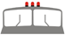

В темное время суток и в условиях недостаточной видимости независимо от освещения дороги, а также в тоннелях на движущемся транспортном средстве должны быть включены следующие световые приборы:
на прицепах и буксируемых механических транспортных средствах — габаритные огни.
Дальний свет должен быть переключен на ближний:
в населенных пунктах, если дорога освещена:
при встречном разъезде на расстоянии не менее чем за 150 м до транспортного средства, а также и при большем, если водитель встречного транспортного средства периодическим переключением света фар покажет необходимость этого;
в любых других случаях для исключения возможности ослепления водителей как встречных, так и попутных транспортных средств.
При ослеплении водитель должен включить аварийную сигнализацию и, не меняя полосу движения, снизить скорость и остановиться.
При остановке и стоянке в темное время суток на неосвещенных участках дорог, а также в условиях недостаточной видимости на транспортном средстве должны быть включены габаритные огни. В условиях недостаточной видимости дополнительно к габаритным огням могут быть включены фары ближнего света, противотуманные фары и задние противотуманные фонари.
Противотуманные фары могут использоваться:
в условиях недостаточной видимости с ближним или дальним светом фар;
в темное время суток на неосвещенных участках дорог совместно с ближним или дальним светом фар:
вместо ближнего света фар в соответствии с пунктом 19.5 Правил.
В светлое время суток на всех движущихся транспортных средствах с целью их обозначения должны включаться фары ближнего света или дневные ходовые огни.
Фарой-прожектором и фарой-искателем разрешается пользоваться только вне населенных пунктов при отсутствии встречных транспортных средств. В населенных пунктах пользоваться такими фарами могут только водители транспортных средств, оборудованных в установленном порядке проблесковыми маячками синего цвета и специальными звуковыми сигналами, при выполнении неотложного служебного задания.
Задние противотуманные фонари могут применяться только в условиях недостаточной видимости. Запрещается подключать задние противотуманные фонари к стоп-сигналам.
Опознавательный знак "Автопоезд" должен быть включен при движении автопоезда, а в темное время суток и в условиях недостаточной видимости, кроме того, и на время его остановки или стоянки.

(Исключен по Постановлению Правительства РФ от 16.02.2008 г. №84.)
Звуковые сигналы могут применяться только:
для предупреждения других водителей о намерении произвести обгон вне населенных пунктов;
в случаях, когда это необходимо для предотвращения дорожно-транспортного происшествия.
Для предупреждения об обгоне вместо звукового сигнала или совместно с ним может подаваться световой сигнал, представляющий собой кратковременное переключение фар с ближнего на дальний свет.